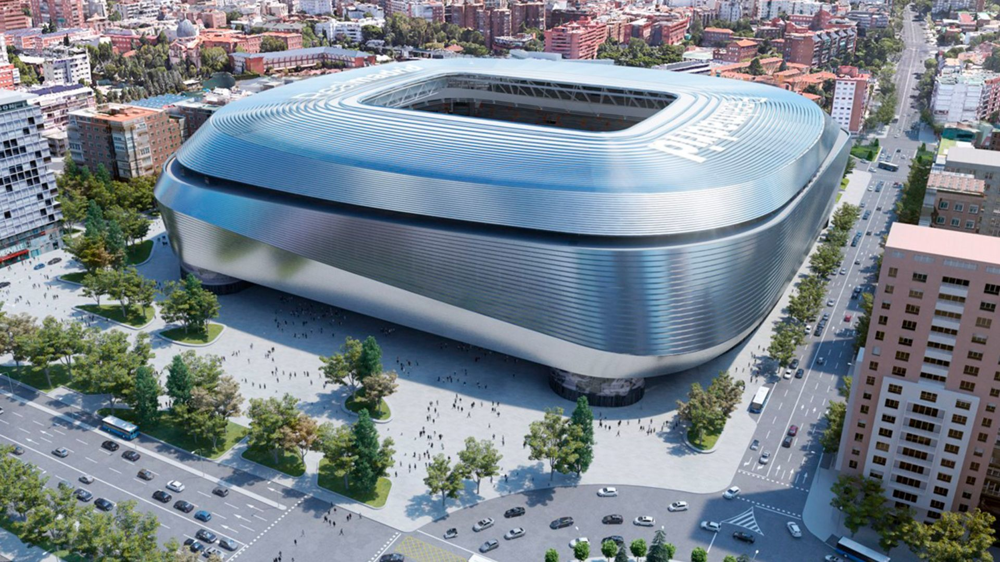
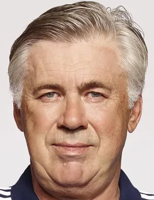

STRUCTURE
Name:
Real Madrid Club de Fútbol

Founded: 6 March 1902
Ground: Estadio Santiago Bernabéu 
Capacity: 85,000
President:
Florentino Pérez

Head coach: Carlo Ancelotti 
League: La Liga
Official WebsiteHome Ground
Santiago Bernabéu Stadium(Spanish: Estadio Santiago Bernabéu) is a football stadium in Madrid, Spain. With a seating capacity of 80,000, the stadium has the second-largest seating capacity for a football stadium in Spain. It has been the home stadium of Real Madrid since its completion in 1947.
Named after footballer and legendary Real Madrid president Santiago Bernabéu (1895–1978), the stadium is one of the world's most famous football venues. It has hosted the final of the European Cup/UEFA Champions League on four occasions: in 1957, 1969, 1980, 2010. The stadium also hosted the second leg of the 2018 Copa Libertadores Finals, making Santiago Bernabéu the first (and only) stadium to host the two most important premier continental cup finals (UEFA Champions League and Copa Libertadores).
Stadium latest news